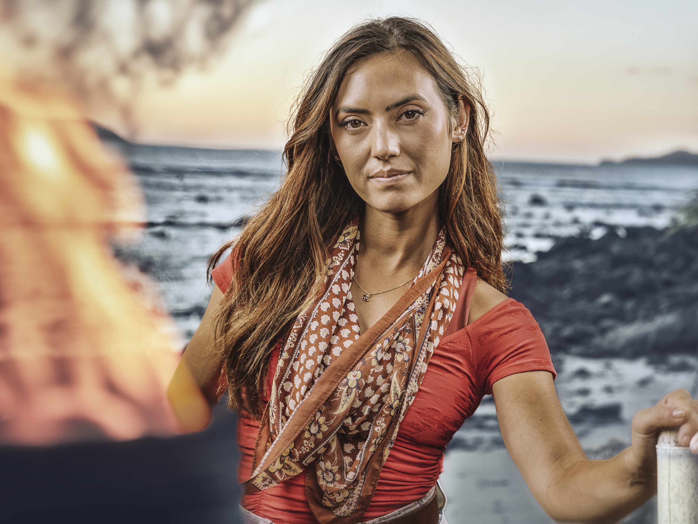

Savannah Louie
Cila Tribe
Age
31
Hometown
Walnut Creek, CA
Occupation
Marketing Specialist
Previous Season
49 (Winner)
Status
Active

Season 49

Season 50
About
Savannah Louie is the Sole Survivor of Season 49, making her one of three winners competing on Season 50. A former TV correspondent and traffic anchor, she transitioned to marketing after her time in media. She is the first Sole Survivor to compete on the very next season, returning to Fiji just 10 days after arriving home from her winning game.
In Season 49, Savannah won a record-tying four individual immunity challenges and holds the new era record for most total challenges won by a Sole Survivor with 12.